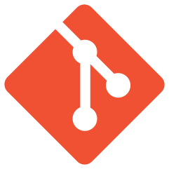

What I've been working on:

Student Association for Applied Statistics
Research & Publication Director
December 2020 - Present
Mentored 9 committee members in research projects and held weekly workshops on data science, statistics, and
machine learning concepts (web scraping, SVM, Naïve Bayes classifier, clustering, neural networks).
Insights & Analytics Committee
August 2020 - December 2020
Completed weekly assignments on computer vision, linear regression, decision trees and random forests, and SQL.
Constructed a natural language processing pipeline with Tensorflow and Keras using a TF-IDF and bag-of-words model
with word embeddings to detect emotion in YouTube and TikTok videos.
The Daily Californian
Sports Reporter
August 2020 - Present
Covered the men's tennis beat in spring 2021 and the men's and women's rowing beat in fall 2020.
Conducted interviews with coaches and players for weekly previews and recaps.
Silicon Valley Youth
Vice President of Math
May 2018 - June 2020
Taught competitive math to 35 students in 4 semesters, individually raising around $5000 for the Ravenswood School District
in East Palo Alto and the Franklin-McKinley School District in South San Jose.
Trained and conducted teacher reviews for the 6 teachers and TAs, growing the math department by 50%.

Git Lite
Built a version control system using Java including core add, commit, branching, and merging functionalities.
Created file storage and retrieval based on SHA-256 hashing, tree transversal to manage branches, and unit tests.